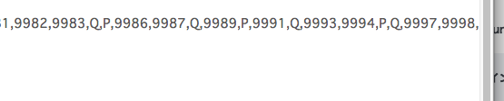

A.Javascriptでの回答を選択した理由は一番簡単だと感じたからです。はじめはPHPで試みましたが、出力がうまくいきませんでした。理由を調べたり、相談してみても解決できなかったので、Javascriptに途中で変更しました。
難しかった点は、If文です。Javascriptでif文をやったことは何度もありましたが、条件が複数でてくると”()"や”{}"が混乱し正しく表示させるために時間がかかりました。
また、特定の数の倍数を文字列に変更する点において、4と５の公倍数が20と重複してしまい、表示が最初はうまくいきませんでした。
解決策として条件の順番を工夫しました。20の公倍数をはじめに持っていくことで20の公倍数は確実に"QP"と表示できるようにしました。
もう一点は、10000まで文字が表示されない理由が分からなかったことです。10000まで表示するよう命令しているにもかかわらず表示されない理由が導き出せず苦戦しました。ゼミの教授に聞いたところブラウザの問題ではないか（実行環境の問題）との指摘を受けました。document.writeを使うとDOMを使って現在のHTMLを直接書き換えてしまうため他のものを使うべきだと教えていただきました。
最後にコンマを末尾に表示させない方法です。末尾に10000が来ていないので最後にカンマで終わるのかそうでないのかがわかりません。しかし、仮に10000まで表示されていると考えてまず1と表示させてから、9999回カンマが繰り返し表示するような命令文を作りました。

全体の進行方法は、混乱しないように事前に整理をしてから取り組むという進めかたを意識しました。必要な命令文を整理し、その上で曖昧な点は調べて自分の中で理解をしてから取り組みました。さらにカンマ区切りや、文字列に変更するなどといった条件が複数あるため、ひとつひとつ解決させながら進行することで確実にコーディングをすることができました。
参考にしたウェブサイトでわかりにくかったところは、どのサイトでもひとつの疑問に対する答えが一部しかそれぞれ抜粋されていないということです。そのウェブサイト上に記載されている文を自分で理解した上で書かなければつぎの命令文に対してうまくつなげることができず反映することができません。自分でどのように組み合わせれば反映されるのかを考えるのに時間を使いました。